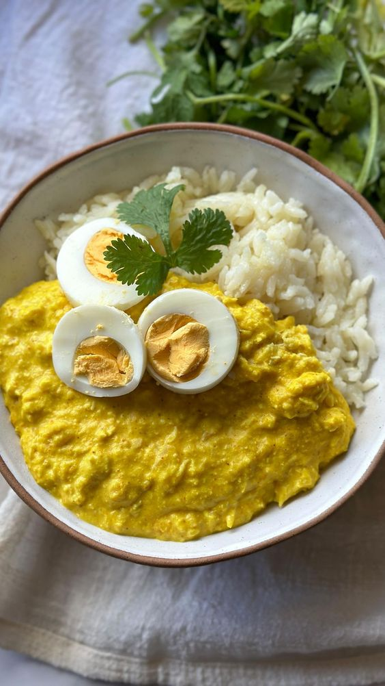

Ají de Gallina | El Plato Perfecto para Estudiantes
Lucciano Falconi, Julio 13, 2024
El ají de gallina, un delicioso plato tradicional peruano, es una excelente opción para los estudiantes debido a sus múltiples beneficios nutricionales y su facilidad de preparación. Esta sabrosa receta combina pollo desmenuzado con una salsa cremosa hecha de ají amarillo, pan, leche y especias, creando una comida que no solo es deliciosa, sino también nutritiva y energizante.
leer mas